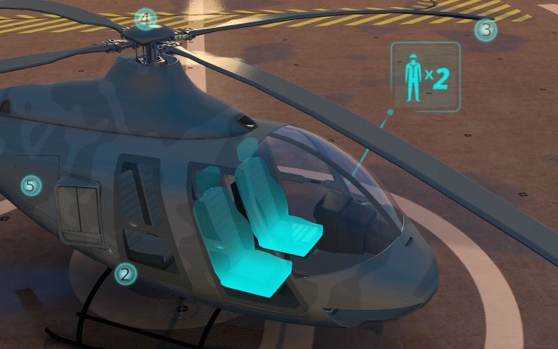

Non-Linear Animation¶
NLA Editor¶
The Blender’s non-linear editor lets us set the scene’s behavior in a comfortable way. With its help we can implement simple scenarios. This way coding is not needed for simple scenes and applications.

The engine supports controlling the following entities:
Any animation the parameters of which can be presented with Actions
Audio playback
Particles emission (in the form of a connection with the global timeline)

Usage¶
Enable the Use NLA checkbox under the Scene tab.
In the NLA Editor set up the required behavior for the scene.
Choose the animation time interval on the Timeline panel.
Additional settings¶
The Blend4Web > Cyclic NLA scene setting activates the cyclic NLA animation mode.
Limitations¶
Vertex animation is not supported.
Scaling and looping of separate animation strips is not supported.
A simultanious playback of differnet types of animation for the same object is not supported.
Visual Programming (NLA Script)¶
Performed by appending logic slots (NLA Script Slot) under the scene tab in Blender. These slots can extend the scene functionality significantly without any coding.
{kind=link}
The slots themselves are logic blocks that are executed from the first to the last sequentially except that this slot explicitly contains a transition (Jump or Conditional Jump). When the end of the list is reached the logic stops to execute, or - if Blend4Web > Cyclic NLA checkbox is enabled - starts again.
Note
Using Blend4Web > Cyclic NLA together with NLA Script does not result in automatic looping of the animation.
For implementing complicated logic there are numeric variables called registers. Each of 8 registers can store a single numeric value. The registers can be used for storing some scene state (e.g. this can be a counter of animation playbacks, character’s health points etc).
NLA Script usage example:

All possible slots are described below.
Play¶
Play back the NLA segment starting from the frame to which the marker points. Animation is played back until the next marker is met, or to the end of the timeline. Finally the next slot receives the control.

Select & Play¶
Wait until the user selects an object (on desktops - with a mouse click, on mobile devices - with a touch). If an object that is specified in this slot is selected - start animation similar to Play slot. If any other object is selected - immediately transfer the control to the next slot.
The latter functionality can be used for selecting one of the multiple objects. In this case it is convenient to place Select & Play slots in the stack one by one. The result of the user selection is catched up by one of this sequence slots because the transition without animation is performed instantly.
Note
In order to allow the user to select an object, enable the Selectable checkbox in its settings, similar to implementation of the glow effect.
{kind=link}
Select & Jump¶
Is similar to the Select & Play slot, except the transition happens instead of animation. This function allows to implement a complicated logic because in this case there is a possibility to identify the user selection results (selecting an object leads to the transition to the named slot which is needn’t to be the next in the list).
Conditional Jump¶
Go to the specified slot if the certain condition is met. The parameters (operands) can also be registers that are activated using the corresponding switches.
Register Store¶
Save a numeric value in the register.
Math Operation¶
Perform a math operation and save the result in the register. Any of parameters (operands) can be either a numeric value or a register.
Show Object and Hide Object¶
This is used to hide and show 3D objects.
Page Redirect¶
This serves as page redirect to other web-pages
Page Param¶
Allows to store any webpage parameter to the given numerical register.
Noop¶
Shortening of “No Operation”. When such a slot is processed no actions are performed. This slot is convenient to place together with a Jump or Conditional Jump slot.